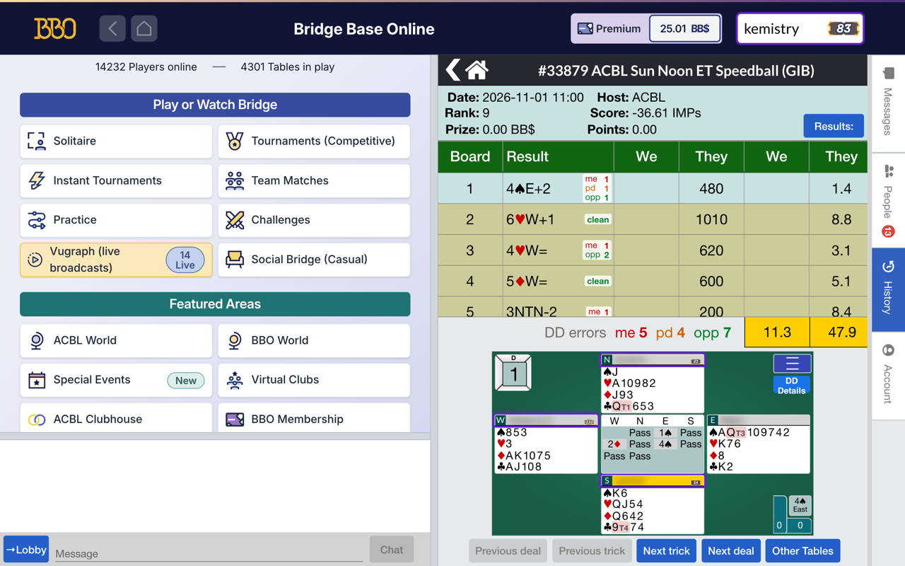
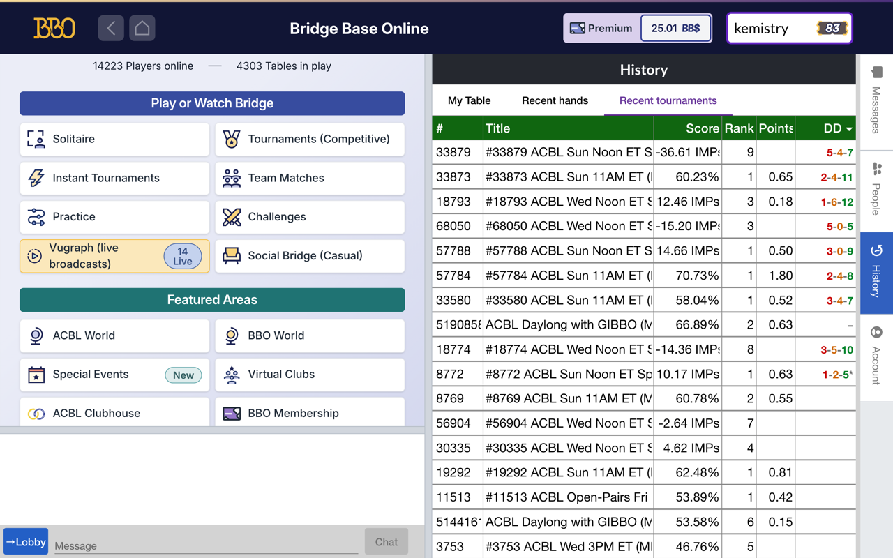
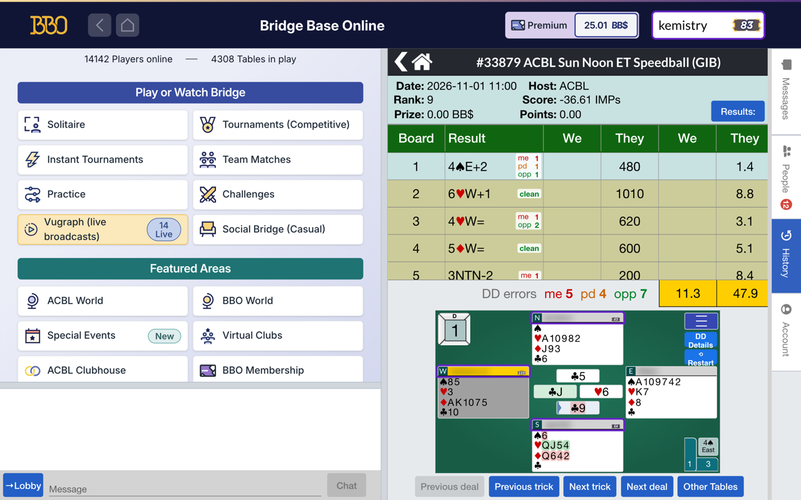

Bridge Craftwork DD
See where the tricks went. A browser extension that adds double-dummy review to the History panel of Bridge Base Online’s web client.
For every board you open
- The cards that cost a trick are marked in the hands, with the trick they were played to.
- Click one and the viewer steps to that trick. The hand that erred shows what it should have played: the best cards in green, the rest in red.
- The card that led and the card that won each trick are marked on the table.
- Each board in the list is tagged with the errors by you, your partner and the opponents, or “clean”. The event’s totals sit beside BBO’s own score.
- DD Details opens the board in the detailed double-dummy viewer, by way of Bridge Classroom.
Across your events
Your Recent tournaments list shows each event’s tally as me-partner-opponents, so you can see how results line up with the errors on each side. A * means some boards are still to do. DD all fills in a whole event; the DD menu fills in today, the last 7 or 30 days, or everything listed.
On your device
The solver runs inside the extension. Nothing is sent to a server for analysis, unless you choose DD Details for a board. Only DD all asks Bridge Base for anything: it requests the boards from its public history pages, one a second, without your login. No analytics, no tracking, no accounts. Hide or show it any time from the menu on BBO’s deal view.


